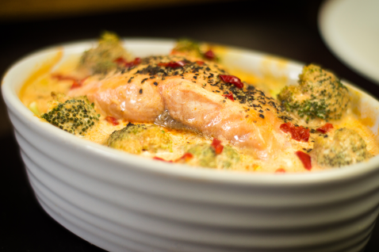

Salmon and Broccoli Bake
Nutritional Facts (per serving)
Calories 433 | Total Fat 28.1g | Saturated Fat 4.9g | Carbohydrates 14g | Fibre 12.2g | Protein 32.3g
Serves: 4
Ingredients
- 4 salmon fillets weighing 460g
- 1 head of broccoli
- 1 red chilli, finely chopped
- 400ml half fat single cream
- 1 tbsp. tomato purée
- 100g red pesto
- Freshly ground pepper to taste
Method
Step 1: Preheat the oven to Gas Mark 5 or 190°C.
Step 2: Mix the cream, tomato puree and red pesto together. Then add in the chopped red chilli.
Step 3: Place the broccoli and the salmon in the red pesto sauce in 4 individual pot pie dishes, ensuring the fish is fully coated, and bake in the preheated oven for 20 minutes.
Step 4: Remove from the oven and allow to cool for 5 minutes or so and serve.
Step 5: Delicious!